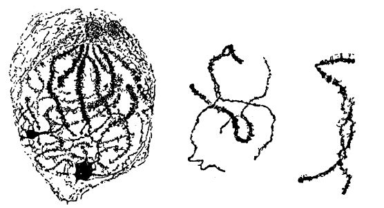
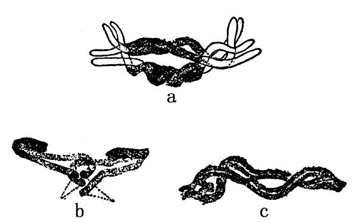
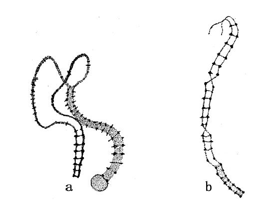
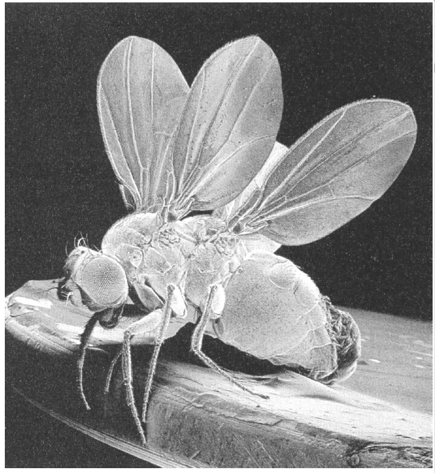

交换的机制
如果像其他证据所明确证明的，染色体是基因的携带体，如果同对染色体之间可以交换基因，那么，发生交换的某种机制迟早是有找到的希望的。
在遗传学发现交换作用的数年以前，染色体的接合过程以及染色体数目在成熟生殖细胞内的减少都已经完全确定了。已经证实，接合时同一对的两条染色体就是互相接合的那两条。换句话说，接合并不是像过去记载所推想的那样碰机会的，接合作用总是发生在来自父方和母方的两条特殊染色体之间。
还可以补上另一事实：接合之所以发生是由于同对两染色体都是同一类的，而不是因为他们分别来自雄体和雌体。这一点已从两方面得到证明。在雌雄同体的生物自体受精以后，每一对的两条染色体虽然由同一个体得来，但两者仍然同样接合。其次，在个别例子里，同对的两条染色体虽然由同一卵子得来，但是既然发生了交换，所以可以假定它们已有过接合。
染色体接合的细胞学证据，对于交换机制提供了初步的说明，因为每对的两条染色体如果整条并列，宛如成对基因两两并列似的，这种位置虽然可以引起相对两段之间的有秩序的交换。当然，不能由此断定，染色体并列的结果一定会发生交换。事实上，根据连锁群内交换的研究，例如果蝇的性连锁基因群（这里有足够的基因，对于连锁组内的变化情况可以提供全面的证据），可知卵子内该对两染色体之间绝无交换的约占43.5%，有一处交换的占43%，有两处交换（双交换）的约占13%，有三处交换的约占0.5%。雄蝇完全不发生交换。
1909年，Janssens详细报道了他所称为的交叉型，这里不谈Janssens研究的详细情节，只需提到他相信他所提出的证据可以证明一对互相接合的两染色体之间有着整段的交换，这种交换可追溯到两条互相接合的染色体在早期中互相缠绕上去（图26）。

图26 Batrachoseps中染色体的接合作用。中间的一图提示在两条染色体中间有一条以两根细丝互相缠绕（仿Janssens）
可惜，在成熟分裂中，染色体互相缠绕时期比任何时期引起了更多的争论。就事件性质而言，即使承认染色体互相缠绕，实际上也不能证实它真能引起遗传学证据所要求的那种交换作用。
染色体互相缠绕的图已经发表了许多。但这种证据在某些方面太难使人信服。例如，最熟悉最确定的有明显的缠绕时期便是当接合成对的染色体短缩准备进入纺锤体赤道面的时期（图27）。这一时期的互相缠绕通常被解释为同两条接合染色体的短缩有某种联系。从这些图看来，一点也不能证明这会引起交换。这一类的例子中虽然有一些例子可能是早期缠绕的结果，但是螺旋状态的继续存在更显示并没有发生交换，因为交换会引起缠绕的消失。

图27 示Batrachoseps染色体呈粗丝形状，已达互相缠绕的晚期，恰在染色体进入第一次成熟分裂的纺锤体以前（仿Janssens）
如果我们再翻阅一下分裂早期的图，便可以看到细丝（细丝时期）似乎是互相缠绕（图28b），不过这项解释还有问题。在这么纤细的细丝上，要决定两者在各个接触点上谁上谁下，事实上是极端困难的。加以细丝须在凝固状态下才能染色供显微镜下观察之用，这种凝固状态，更大大地增加了观察上的困难。
最接近于证实细丝缠绕的，是那些从一端（或从曲形染色体的两端）开始接合，以后逐渐进展到另一端（或向曲形染色体的中部）的切片。其中也许以Batrachoseps（两栖类）精细胞的切片最引人注意（图26），但Tomopteris图也几乎或完全同样良好。涡虫卵子图（图28）也十分可信。至少有一些图给人一种印象，认为两丝靠拢时在一处或数处彼此重叠，不过这一印象还不足以证明两丝之间除在某某平面上表现交叉外另有其他关系。也不能由此认为两丝重叠之处一定会发生交换。不过，我们虽然必须承认细胞学方面未能证实交换，就情况性质来说，事实上也非常难于证明。但在若干例子里，已经证明了染色体接合时的位置很容易使人假定交换的发生。

图28 涡虫的一对染色体互相接合。a示两条细丝彼此靠拢。b示两接合丝在两个平面上交叉（仿Gelei）
因此，细胞学家对于染色体的描述，在某种程度上满足了遗传学的要求。如果回忆这一事实，即许多细胞学证据是在发现孟德尔论文以前早已找到的，其中没有一项研究的进行带有遗传学的成见，而是完全独立，同遗传学家的研究无关，那么，这些关系似乎不会只是偶然的巧合，而毋宁是细胞学家已经发现了遗传机制里的许多重要部分；遗传要素依孟德尔两个定律分配以及同对染色体间有秩序地交换，就是通过这种机制来进行的。

具有四个翅膀的果蝇的扫描电子显微图